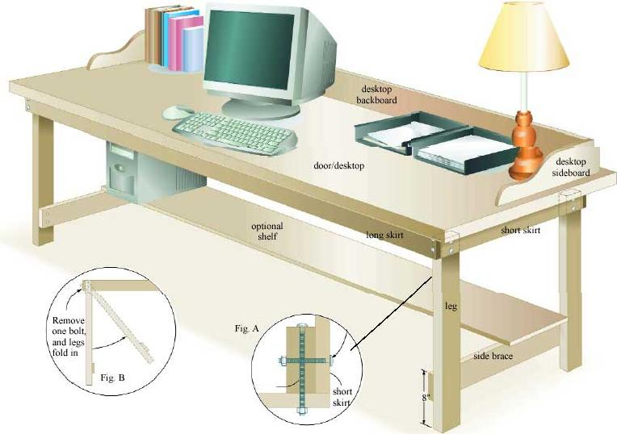

The pattern for the curved sideboards: Draw a grid of 1-inch squares then use the reference lines to plot the shape of the curve. You also can enlarge this pattern on a copier until it is actual size, and then cut out the curve and mark it onto the sideboards.